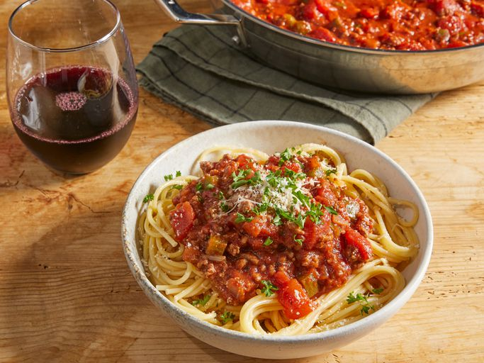

Home
Spaghetti

Description
Spaghetti, the quintessential long stranded pasta, has earned its place as the backbone of countless comforting meals across the globe. A perfectly balanced plate of homemade spaghetti that marries the comforting familiarity of fresh pasta with the bold, earthy flavors of a classic ground beef tomato sauce, making every forkful a satisfying, soul fulfilling experience.
Ingredients
- 1 pound ground beef
- 1 medium onion, chopped
- 4 cloves of garlic, minced
- 1 small green bell pepper, diced
- 1 - 28 ounce can of diced tomatoes
- 1 - 16 ounce can of tomato sauce
- 1 - 6 ounce can of tomato paste
- 2 teaspoons dried oregano
- 2 teaspoons dried basil
- 1 teaspoon salt
- 1/2 teaspoon ground black pepper
Steps
- Gather ingredients
- Combine ground beef, onion, garlic, and green pepper in a large saucepan over medium-high heat. Cook and stir until meat is browned and crumbly and vegetables are tender, 5 to 7 minutes. Drain grease.
- Stir diced tomatoes, tomato sauce, and tomato paste into the pan. Season with oregano, basil, salt, and pepper. Simmer spaghetti sauce for 1 hour, stirring occasionally.
- Serve hot and enjoy!